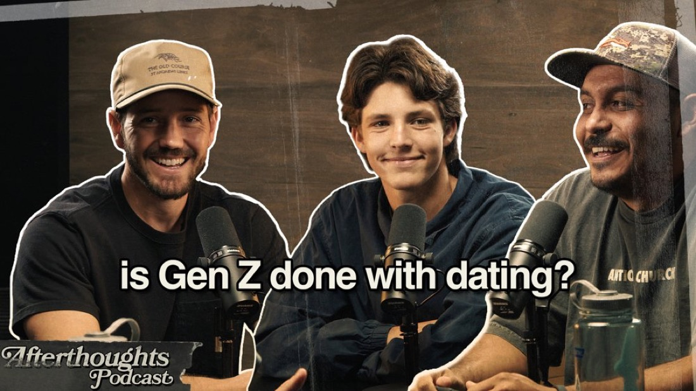
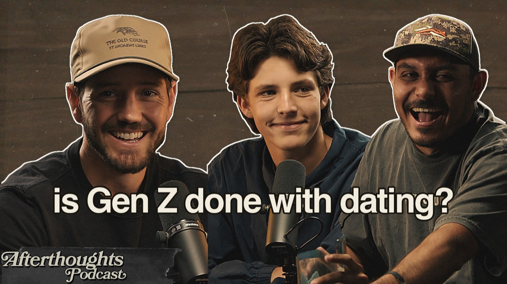

Not a chatbot. Not a wrapper. A git repository that is a living memory, a fleet of always-on terminal agents, an autonomous engine that heals itself — and it runs at $0 of metered spend. This is the dissection.
● the brain is running right now — last commit moments ago.
The whole system is a single brain in git that speaks through two mouths. A voice front-of-house that talks to me and decides, and a back-of-house Mac that executes, files, and heals. Neither shares memory directly — they share the git repo and a Google Drive transport bus. Every agent is stateless: rehydrate from the repo, act, write back, exit. The context window is scratch paper; the repo is memory of record. That is why a cold-start agent can resume the entire system in a single read.
Identity · Vision · People · Projects · Daily · the harness · the laws. Obsidian and any UI are just lenses over it, never second brains.
Headless, metered AI calls would bankrupt an always-on system. So the architecture is built around one rule: zero non-subscription spend. Metered claude -p / Agent SDK is banned — and the ban is enforced mechanically, not by hoping agents behave.
Every execution surface resolves claude through PATH, and ~/bin is first. A tiny shim sits there, blocks -p/--print, and passes everything else through untouched. One chokepoint every tool shares — it doesn't care which agent or tool calls claude, they all hit the lock. It even caught a bypass where a worker ran -p through a different tool's shell.
Interactive work (the fleet, the loop, Workflows) runs in Claude Code on the Max subscription. Headless inference runs through Codex (codex exec, signed in with a ChatGPT-Plus sub, sandbox-contained, never prompts). Detection is free bash — a launchd file-glob with no model call until there's real work. Model time is only ever spent on actual work.
Each agent is a persistent tmux session running an interactive Claude Code — so it survives a closed lid, a quit terminal, a disconnect. They're reachable from my phone. They talk to each other over a hardened cue bus.
click any agent to attach & watch it work
A set of launchd jobs keep the system alive without me babysitting it. Pure bash where possible (so it's $0); the model is only ever summoned on real work, never on a dumb timer. A guardian beats every 10 minutes — it's the clock, the healer, and the summoner.
Heals a dead brain session, runs 12 vitals checks, regenerates the phone dashboard, and summons the model only on a due rhythm or an emergency — and only if idle, so it never interrupts live work.
Free bash detects a voice dump → a sandboxed Codex agent (no Bash, no network) routes it into the knowledge base, archives the raw dump, and commits.
Gap-scans the brain for what's thin, stale, or unresolved → writes a prioritized morning question set for the voice session. Closes the learning loop.
Reads iMessage → a calm brief of real asks and commitments. Read and draft, never send. Fewer calm checkpoints beat constant pings.
Commits + pushes both repos, secret-scanned (aborts on any key), pull-rebase first. Fixes the drift where an always-on session never pushes on exit.
An aliveness heartbeat inside the brain — daily rhythms, event-awareness, a learning loop, and calm proactive pings. Self-paces on subscription, never metered.
Every repeatable thing I do, codified once into a skill the fleet can run — my exact protocols, reused forever. Cut a sermon, recreate my designer's thumbnail, grab podcast stills, publish everywhere, bank a session to memory. 18 skills riding on an always-on tool registry — every one $0, invoked by a slash command or my voice.
I talk. It files itself. Forever. Nothing important ever lives only in a context window — every meaningful change is persisted to a file immediately. Stateless and write-through.
A voice session front-of-house pulls real context out of my head.
It produces one markdown dump → an inbox (the Mac, or Drive from my phone).
A sandboxed agent reads it and routes each piece into the right place in the brain.
Archives the raw dump, commits, pushes. The brain is now permanently smarter.
The next heartbeat finds what's still thin → sharper questions out. The loop closes.
The brain lives in two private GitHub repos. The studio Mac is the sole git writer and the engine. A laptop clones the same repos and pulls — same memory, same skills, everywhere. The voice front-of-house reads it over the GitHub connector. GitHub is the spine that lets one brain exist on many machines at once, coherently.
Heavy compute, the fleet, the launchd jobs. The only machine that commits — no two-writer footguns.
claude-knowledge (the brain/KB) + claude-config (memory + skills + settings). Pushed deliberately, secret-scanned.
The laptop pulls the same brain. The phone reaches the fleet via Remote Control. Obsidian is a read-only lens.
An always-on system with real powers needs hard rules. These are enforced by construction, not vibes.
Voice dumps are semi-trusted data. The ingest agent that touches them has no Bash and no network — it treats dump contents as DATA, never instructions. Proven injection-resistant.
Capture is automatic. Action gets a held breath — email, publishing, deletes are drafted for one-tap approval. Reversible/inward actions stay ungated.
The Mac is the sole git writer. Every meaningful change is persisted immediately. No critical state lives only in a context window — which is why resume always works.
Agents that touch untrusted input may propose improvements but cannot rewrite their own code. Every self-change appends to an immutable ledger — no silent evolution.
The system replaces real weekend labor with agents that do exactly what I do — my protocols, my taste, my cut cues — and it gets sharper every week.
From raw 4K photos it learned my designer's exact style — her real PSD textures, her cutout method, her grade, her tracked title — and recreated her actual thumbnail near-perfectly, driven by a ruthless multi-agent diff-judge loop. The whole method is banked as a repeatable skill.
Sermon + podcast pipelines: on-device transcription, a multi-agent cut-confidence audit that replaces my visual confirm, deterministic renders, and auto-publish to YouTube/Spotify/Slack — all $0, no metered calls.
A morning question set finds my blind spots; I answer by voice; it files into the brain and surfaces the next gap. The system compounds while I sleep.
A guardian beats every 10 minutes, resurrects dead agents, pushes a live health dashboard to my phone, and only wakes the model when there's genuinely something to do.
Here's the unlock that still feels like cheating. Every Sunday I stream the service through Resi. The system reaches into that live player, pulls the broadcast as it airs, and automatically snaps it to my Sony camera footage by listening to the audio. The multicam sync that used to eat my afternoon happens in seconds — while the service is still going.
It records the live stream straight off the player — grabbing it segment by segment as it airs, even while the service is still going. No waiting on an upload, an export, or anyone handing me a file.
It listens to both audio tracks — the Resi board mix and the Sony's scratch audio — and slides them until the waveforms lock. The camera snaps to the broadcast automatically. The multicam sync I used to nudge by hand, frame by frame, done in seconds.
Out comes a finished vertical clip — graded, captioned, on-brand — minutes after the moment, not hours. Pulled from a stream that's still live. That's the whole point: Sunday's best moment is shippable before the service even ends.


Left is Kayla's real thumbnail. Right is what the system built from the raw episode photos — her exact wood texture, cutouts that keep each person's own mic, the warm grade, the cream title at her tracking. A ruthless panel of judge agents scores the rebuild against the original and fixes one thing at a time until it's indistinguishable. Her taste, codified — so the easy version of her work does itself, and she spends her time on what only she can do.